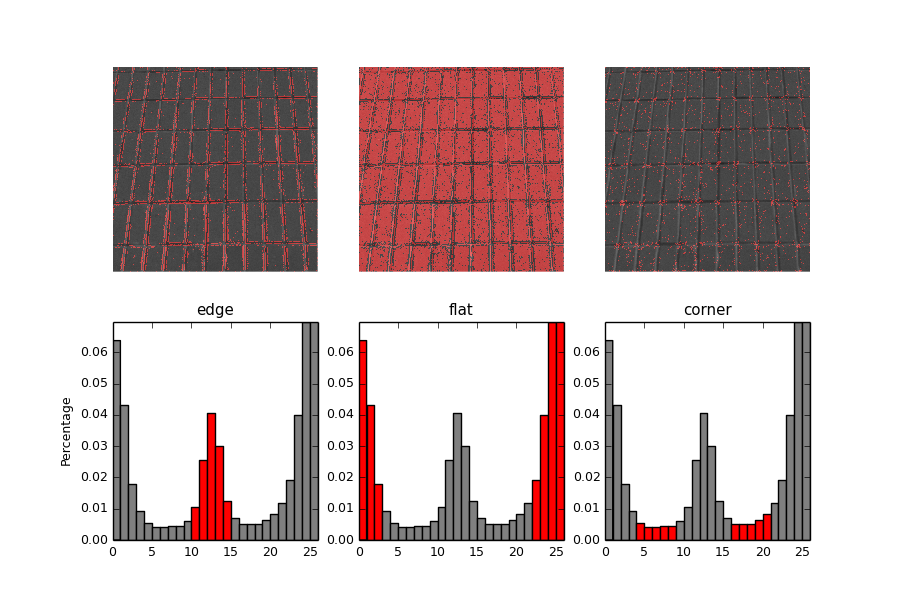
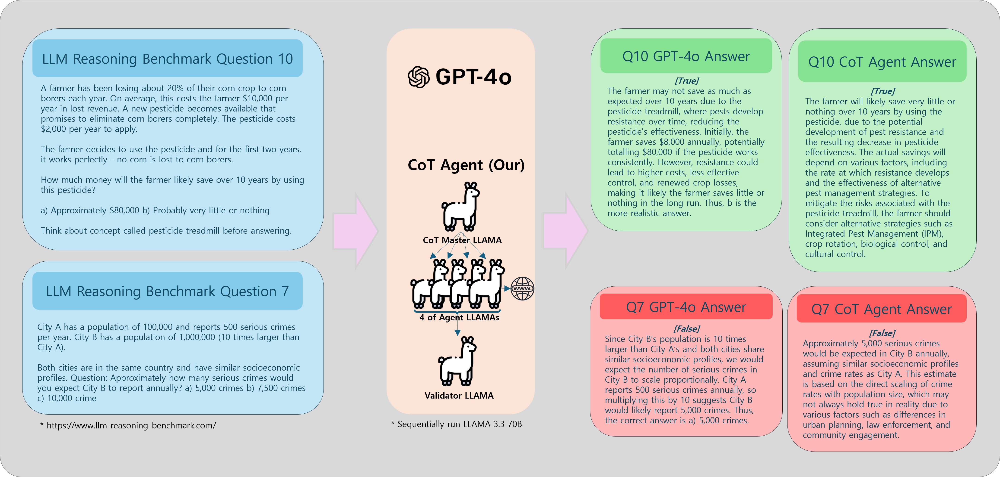
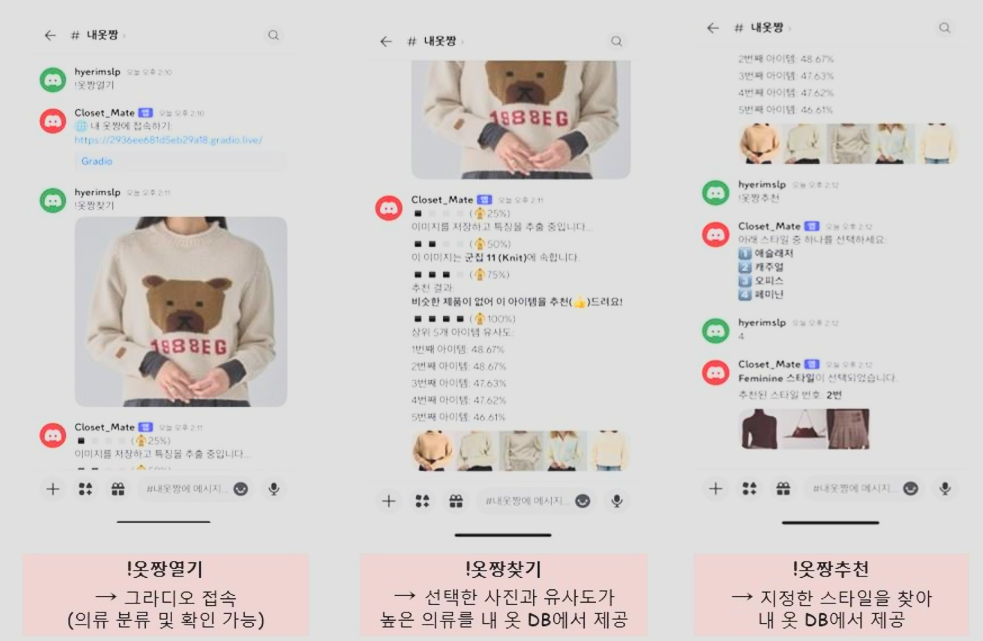
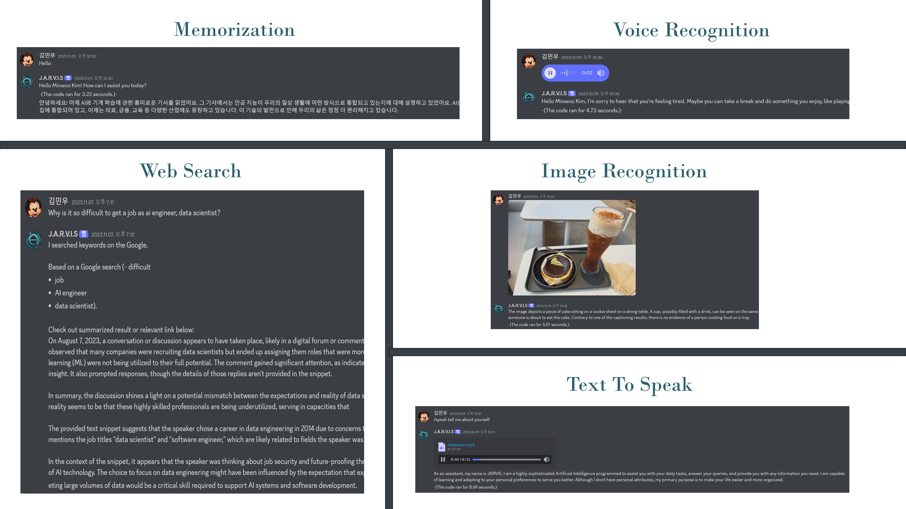
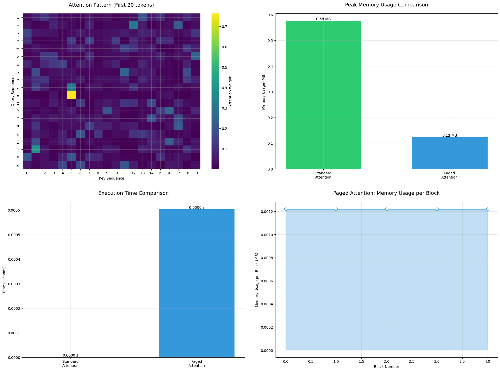
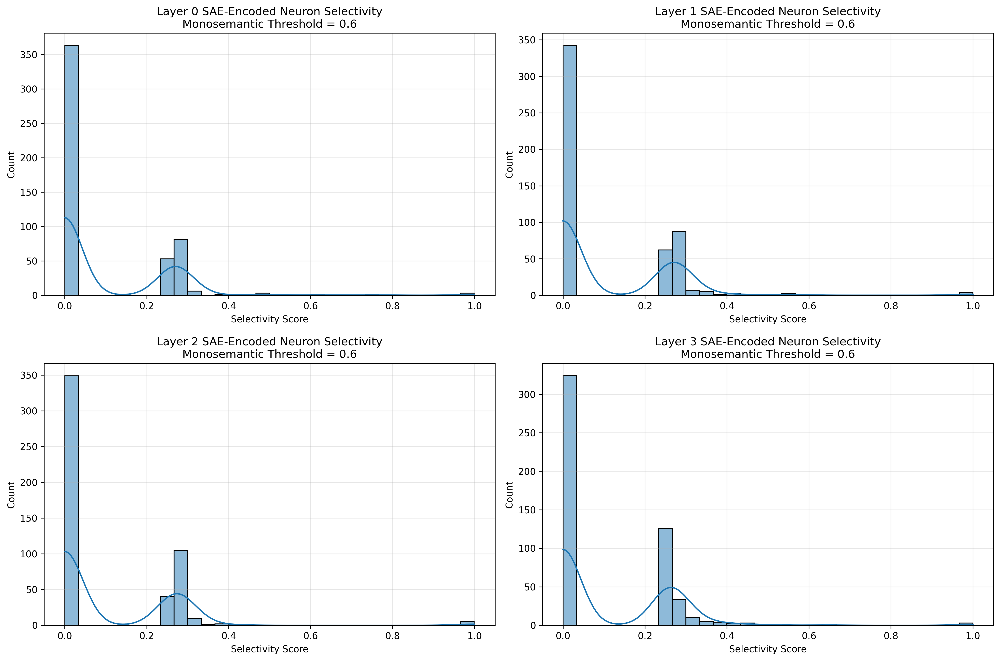
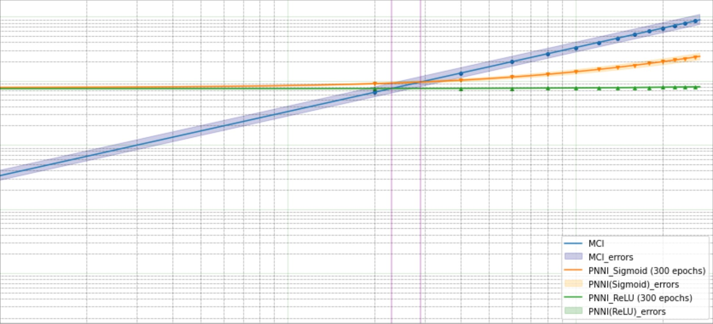
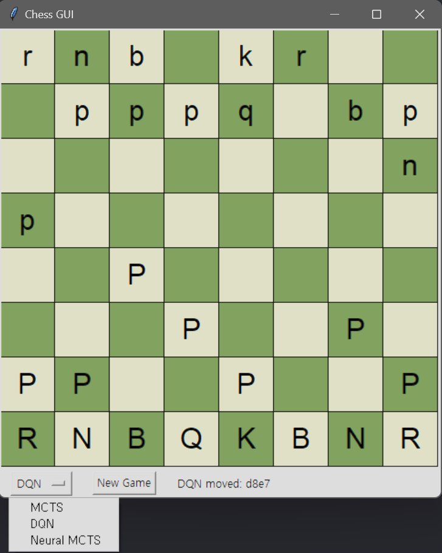

Career & Research
Scouter - AI Vision Analysis Assistant Platform
- AI-powered Vision Analysis platform for Hearing impaired People
- Real-time Zero-shot Object Analysis and Search
- Real-time Super-Resolution and LLM usage with STT
SRGAN
MobileSAM
Asyncronous LLM
Florence 2
View on GitHub
JobPT - AI Job Searching Assistant
- AI-powered Matching Job Description to CV
- Feedback on CV based on Job Description with numerical score
- Personalized interview question generation and CV Revision
RAG
ChromaDB
Vision Parsing
Knowledge Graph
View on GitHub
DINOv2 Backbone with TensorRT acceleration for Non-Destructive Inspection System Demo

- Automated defect detection system using X-ray imagery
- Implemented LBP and advanced image preprocessing
- TensorRT optimization for real-time inference
DINOv2
TensorRT
CUDA
View on GitHub
Chain of Thought (CoT) Agent Model Research

- Model Reasoning research like OpenAI's O1 model
- Chain of Thought (CoT) based agent systems with self-aware iteration
- Innovative sequential code execution approach
Reasoning
Sequential LLM
CUDA
View on GitHub
Closetmate - AI Fashion Assistant

- AI-powered fashion recommendation system
- Personal wardrobe management and styling suggestions
- Image-based fashion item recognition
DeiT
Vectorized Search
K-means Clustering
Boolean Masking
View on GitHub
J.A.R.V.I.S - Multimodal General Assistant

- AI-powered Multimodal Assistant system
- Understand Image, Text, Audio, Function Call
- Response with Discord Bot
Function Call
Image Understanding
STT, TTS
Reduce Latency
View on GitHub
Quantum Mechanics Research
- Quantum Computing
- Feynman Integral
- Advanced Physics Research
Quantum Computing
Physics
Mathematical Analysis
View on GitHub
Mamba, Jamba, Hymba, Liquid Time-constant Network Research
- Research New Architecture for LLM
- Optimize Computing
- Reduce Size of Model
Mamba
Jamba
Hymba
LTC
View on GitHub
Paged Attention Research (KV Cache)

- Model optimization research in KV cache
- Memory efficiency improvements
- Performance optimization techniques
vLLM
PyTorch
CUDA
View on GitHub
Monosemantic Neuron Research

- Neuron specific Monosemanticity
- Monosemanticity Checker with Sparse AutoEncoder
- Understanding LLM black box
Sparse AutoEncoder
Transformer
Monosemantic Neuron
View on GitHub
Parametric Neural Networks Integration Dissertation

- Developed neural network-based approximation methods for Feynman integral calculations
- Reduced computational costs significantly compared to traditional methods
- Optimized for CERN LHC-like particle collision experiments
Deep Learning
PyTorch
Physics
View on GitHub
Reinforcement Learning with Monte Carlo Tree Search for Chess Game

- Optimized movement search with Monte Carlo Tree Search
- Reinforcement Learning with Deep Q-Network
- Parallel Computing for enhanced performance
MCTS
DQN
Parallel Processing
View on GitHub